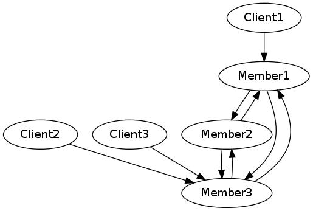

xlreg_rb
The Ruby client for the xlReg cluster registry.
xlreg_rb
makes it easy to create new small clusters some or all of whose members are
written in the programming language Ruby.
xlreg_rb is expected to be used primarily for testing, where
the ability to create and launch new, unique, distinct clusters in seconds
will be a major advantage.
In such a cluster, members use the xlReg public server to register and exchange member IP addresses. When a member finishes booting, it has learned the IP addresses of its peers and the RSA keys used to set up encrypted communications between members of the cluster and between cluster members and clients.
The xlReg Service

xlReg is a service which provides its clients with unique nodeIDs and allows them to register and join new clusters and collect configuration information about existing clusters.
An xlReg cluster is a number of machines which cooperate as a set of intercommunicating servers. Each such server has two RSA keys. One, the sig key, is used for creating digital signatures. The other, the comms key, is used for encrypting communications. Most often the comms key is used for exchanging keys for block ciphers. That is, the comms key is used only for agreeing on the much faster block cipher key used during the rest of the communications session.
Each xlReg cluster member has at least one IP address used for intra-cluster communications, for communications between members. In some clusters each member will also have a second IP address used for communications with cluster clients.
The xlReg server itself, its clients, and so the cluster members all are or behave like XLattice nodes. That is, they are self-contained fault-tolerant entities with some persistent store. These nodes may be located anywhere on the global Internet, or on private networks with access to the network in which an xlReg server resides.`
Like any XLattice node, the xlReg client can either be configured with some specific keys at start-up or it will generate a new pair of keys and save them to persistent store.
Registration
A booting xlReg client establishes an encrypted connection to an xlReg server (by default this is xlreg.xlattice.net). If this is the client’s first conversation with the xlReg server, the client provides the server with configuration information including its RSA public keys. (The client does not register its secret RSA private keys.) The configuration information is signed with the applicant’s private *sig” key. The server uses the client’s RSA public key, provided as part of the configuration information, to verify the client’s digital signature on the configuration data. This proves that the configuration information is intact and that the applicant has the private key corresponding to the public key. In other words, the server has in a certain sense confirmed the applicant’s identity. Having done this, the xlReg server issues the client with a unique node ID, a 20-byte value, completing client registration.
Once an xlReg registry client has identified itself to the registry it can
- register new clusters or
- join existing clusters or
- get information on existing clusters.
The third option is used, for example, by nodes intending to become clients of an existing cluster.
Acquiring Configuration Data
After a new member has joined a cluster the server provides it with cluster configuration data. This includes
- the cluster name,
- the cluster ID, and
- the cluster size, the maximum number of cluster members
It also includes for each current cluster member the member’s
- nodeID,
- IP address(es),
- sig RSA public key, and
- comms RSA public key

The new cluster member can then use this information to communicate with other members. Cluster members need no further assistance from the xlReg server.
Cluster members will communicate with one another and clients using protocols agreed-upon among themselves, but the xlReg registry has no knowledge of such protocols.
xlreg_rb is currently in development. This is not necessarily a description of running code; it is where we are going.
xlReg is an XLattice project. More detailed (but somewhat dated) conceptual information on XLattice is available at the 2003-2006 Java XLattice website.
xlReg servers and clients communicate using the Gooble Protocol Buffers-based xlReg protocol. An xlReg server has been in test for several months.
Public Development Server
There is currently an xlReg server running on xlreg.xlattice.org:56789, with the public keys shown in the registry credentials below.
regCred {
Name: xlReg
ID: f3013fae154097f89693999d255cc3d26c7453fa
CommsPubKey: ssh-rsa AAAAB3NzaC1yc2EAAAADAQABAAABAQC9TMVg0Lvf4ZHe4TOQJ2d5qhg+bEL2m+2VlVv6vECnTTOJmcooPjZCKBphVFOPjaIzHoafun5RMbSYAjyoIbXEOL5kl35pWUC7wFBYTgrsoJO+it7WGbmF/JEThU2KwTErPY2gdJ/NWwXM8v+JrQUqC5NARJ/nF/y055yZF6ijR5iprWYPM2aRH3aVnjxTD4klp8lVtnIxeQXkNK3JEUGFQGiDRq4/U2meLMi2ekvLArJDflzflNmM71XRSB6mwgE4pFHLMMztPa7U4TweNr13BZQYbKgc6jqQFTMQ8Qf5st8Hu6oa04xllJlN/uOegjdKvw3+QhMotA8kpTgySuyP
SigPubKey: ssh-rsa AAAAB3NzaC1yc2EAAAADAQABAAABAQC1NnmySXlKjrn6hrLVXYkkJlvCpADkHe0i0pfFgU9pTJxt2QRpDlqpUsjfTCtDL4oG4ZGCkyEIUFVl/fykISbeeFbb6U4z8TBoCIGMzcEue9HAfzval7LUDbrR1QquylXe0vCkBAgfZk1c15QIyPhL2WX3AdOcaaOvDncqqSQxWcSst83ND9OWWCskxS7+yYhFoiZp4n4pKlgl4bppU1UHHGHtjRPX8fUx/QhOMMZalL34CFow9aA9A+Mu4KmT5w/qc+3oaKwc7+JleAinjGte8HrDZz8irC2df1YFK62/zi3V8Dpt8FlAi0vbDvzDUzmDXGaPI8Y3tab3s842mWYJ
EndPoints {
TcpEndPoint: 54.186.197.123:56789
}
Version: 1.9.9
}
The IP address in the reg credentials above is of course that of xlreg.xlattice.org.
Server Implementation
The xlReg server and its supporting libraries are written in the Go programming language, a high-performance systems programming language incorporating certain features of Tony Hoare’s revolutionary CSP, Communicating Sequential Processes.
Google’s Go language is a stable product. It has been available for several years and the compiler is widely acknowledged to be very fast and to generate fast, compact code. The Go language itself – the compiler and its libraries – is free and open source.
Server Source Code
Software developers can currently obtain the xlReg server source code at xlReg_go’s Github project page so that if you are impatient to begin using xlReg you can build and operate your own server.
Client Source Code
This is best obtained through this client’s Github project page.
Project Status
The xlReg server is currently a good beta: it is reasonably reliable and there are no known serious bugs.
This client is itself pre-alpha: some minimal code exists, but nothing
beyond reading the registry credentials (regCred.dat) and going through
the initial hello/reply session with the server, xlReg.
Licensing

The material on this github.io website is licensed under a Creative Commons Attribution 4.0 International License.
Project software is licensed under an MIT license. Follow the SOFTWARE LICENSE link below for more information on project software licensing.